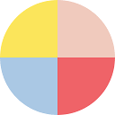
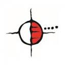

Pay per post
Employers pay for each job posting. 47 entries are tagged this way.
| Board | Prominence | Type | HQ | Language | API | Partner program |
|---|---|---|---|---|---|---|
| Large #7,179 | Niche job board | United States | English | Partner-only API | yes | |
| Large #8,572 | Government job site | United States | Not recorded | API status unknown | unknown | |
| Established #11,371 | Niche job board | United Kingdom | Not recorded | API status unknown | unknown | |
| Established #11,609 | Job board | Germany | German | Partner-only API | yes | |
meinestadt.deJob board | Established #14,459 | Job board | Germany | Not recorded | API status unknown | unknown |
| Established #25,918 | Niche job board | Not recorded | Not recorded | API status unknown | unknown | |
CadremploiJob board | Established #33,001 | Job board | France | French | API status unknown | unknown |
| Established #43,748 | Niche job board | Not recorded | Not recorded | API status unknown | unknown | |
| Established #46,872 | Job board | Not recorded | Not recorded | API status unknown | unknown | |
| Established #71,818 | Niche job board | Canada | English | No known API | unknown | |
| Established #77,230 | Niche job board | Not recorded | Not recorded | API status unknown | unknown | |
| Established #77,860 | Job board | Poland | Polish | API status unknown | unknown | |
| Established #99,058 | Job board | Finland | Finnish | API status unknown | unknown | |
Profession.huJob board | Small #122,291 | Job board | Not recorded | Hungarian | API status unknown | unknown |
| Small #126,934 | Job board | United Kingdom | Not recorded | API status unknown | unknown | |
| Small #172,868 | Job board | Not recorded | Polish | API status unknown | unknown | |
| Small #224,664 | Job board | Canada | English | API status unknown | yes | |
HotelcareerJob board | Small #228,012 | Job board | Germany | Not recorded | API status unknown | yes |
| Small #232,631 | Job aggregator | Germany | Not recorded | API status unknown | unknown | |
| Small #233,743 | Niche job board | Not recorded | Dutch | API status unknown | unknown | |
TurijobsJob board | Small #264,236 | Job board | Spain | Spanish | API status unknown | unknown |
| Small #318,621 | Niche job board | Not recorded | Dutch | API status unknown | unknown | |
| Small #362,889 | Niche job board | Not recorded | Dutch | API status unknown | unknown | |
| Small #409,802 | Job board | Not recorded | Polish | API status unknown | unknown | |
| Small #413,520 | Government job site | Not recorded | Not recorded | API status unknown | unknown | |
| Small #481,821 | Job board | Canada | English | API status unknown | unknown | |
| Small #490,981 | Niche job board | Not recorded | English | API status unknown | unknown | |
| Small #499,596 | Job board | Not recorded | Not recorded | API status unknown | unknown | |
| Small #536,451 | Niche job board | Not recorded | English | API status unknown | unknown | |
| Small #652,611 | Job board | Not recorded | Portuguese | API status unknown | unknown | |
| Small #811,404 | Niche job board | Not recorded | Not recorded | API status unknown | unknown | |
| Small #916,915 | Niche job board | Netherlands | Dutch | API status unknown | unknown | |
CVMarket.lvJob board | Small #925,343 | Job board | Not recorded | Latvian | API status unknown | unknown |
| Not comparable | Niche job board | Not recorded | English | API status unknown | unknown | |
 | Not comparable | Niche job board | Not recorded | Not recorded | API status unknown | unknown |
| Not in top 1M | Job multiposting and distribution service | United Kingdom | Not recorded | API status unknown | unknown | |
 | Not in top 1M | Niche job board | Canada | English | No known API | unknown |
CuratorSearchJob board | Not in top 1M | Job board | Not recorded | Not recorded | API status unknown | unknown |
GippslanderJob board | Not in top 1M | Job board | Not recorded | Not recorded | API status unknown | unknown |
Go Zambia JobsJob board | Not in top 1M | Job board | Not recorded | Not recorded | API status unknown | unknown |
| Not in top 1M | Niche job board | Not recorded | English | API status unknown | unknown | |
| Not in top 1M | Job multiposting and distribution service | Not recorded | English | API status unknown | yes | |
| Not in top 1M | Job aggregator | Not recorded | Not recorded | API status unknown | unknown | |
| Not in top 1M | Niche job board | Not recorded | English | API status unknown | unknown | |
| Not in top 1M | Job board | Not recorded | Polish | API status unknown | unknown | |
Verde TalentJob board | Not in top 1M | Job board | Not recorded | Not recorded | API status unknown | unknown |
| Not in top 1M | Niche job board | Not recorded | Not recorded | No known API | unknown |